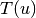
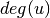
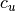
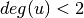

clustering¶
- clustering(G, nodes=None, weight=None)[source]¶
Compute the clustering coefficient for nodes.
For unweighted graphs, the clustering of a node
 is the fraction of possible triangles through that node that exist,
is the fraction of possible triangles through that node that exist,
where  is the number of triangles through node
and
 is the degree of .For weighted graphs, the clustering is defined as the geometric average of the subgraph edge weights [R189],

The edge weights
 are normalized by the maximum weight in the
network
are normalized by the maximum weight in the
network  .
.The value of  is assigned to 0 if .
Parameters : G : graph
nodes : container of nodes, optional (default=all nodes in G)
Compute clustering for nodes in this container.
weight : string or None, optional (default=None)
The edge attribute that holds the numerical value used as a weight. If None, then each edge has weight 1.
Returns : out : float, or dictionary
Clustering coefficient at specified nodes
Notes
Self loops are ignored.
References
[R189] (1, 2) Generalizations of the clustering coefficient to weighted complex networks by J. Saramäki, M. Kivelä, J.-P. Onnela, K. Kaski, and J. Kertész, Physical Review E, 75 027105 (2007). http://jponnela.com/web_documents/a9.pdf Examples
>>> G=nx.complete_graph(5) >>> print(nx.clustering(G,0)) 1.0 >>> print(nx.clustering(G)) {0: 1.0, 1: 1.0, 2: 1.0, 3: 1.0, 4: 1.0}